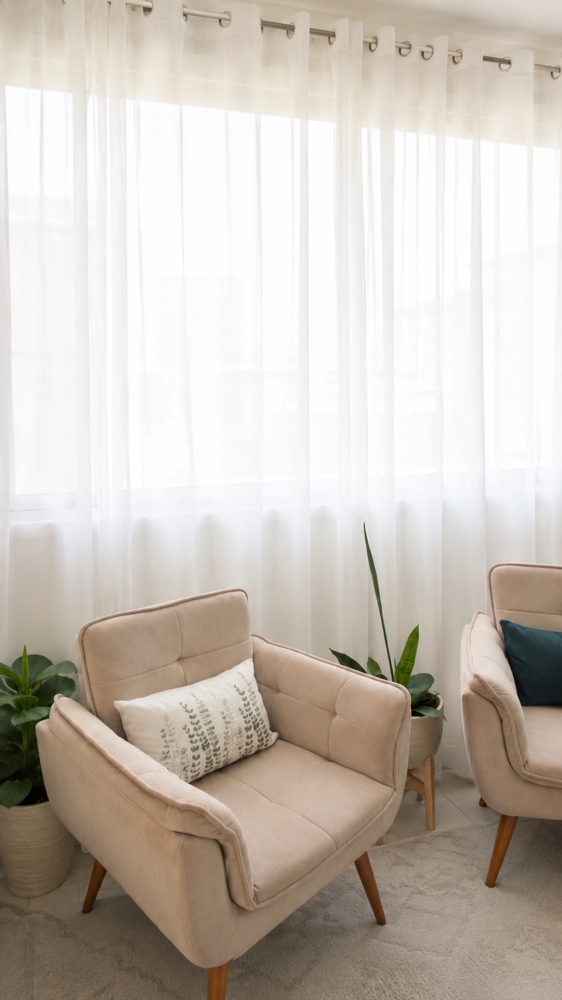

Atendimento presencial
Realizado na Clínica Somar, em Aparecida de Goiânia/GO — Edifício E-Business, em frente ao Buriti Shopping.
A psicoterapia é um espaço de escuta, presença e construção de sentido, onde você pode compreender seus sentimentos, fortalecer vínculos e desenvolver recursos internos para lidar com os desafios da vida.
Aparecida de Goiânia/GO e por Google Meet.
Conforme o Código de Ética do Psicólogo e as Resoluções do CFP.
Atendimentos
Para quem sente que precisa cuidar da saúde emocional, compreender padrões de comportamento e funcionamento, fortalecer relações, atravessar momentos de dor, transição ou simplesmente deseja se conhecer melhor.
Acolhimento e apoio ao desenvolvimento emocional na infância.
Suporte para os desafios e descobertas de uma fase de transformações.
Construção de identidade, escolhas e projetos de vida.
Saúde emocional, relações, padrões de comportamento e autoconhecimento.
Cuidado, sentido e qualidade de vida em cada ciclo.
Fortalecimento de vínculos e da convivência.

Realizado na Clínica Somar, em Aparecida de Goiânia/GO — Edifício E-Business, em frente ao Buriti Shopping.
Realizado por meio do Google Meet. O link é enviado pelo WhatsApp; recomenda-se local reservado, fones de ouvido e conexão estável, para preservar o sigilo e a qualidade do atendimento.
Abordagem
Cuidado ético, escuta qualificada e construção de sentido.
Foco no aqui-e-agora, nas relações e nas formas de estar no mundo.
Compreensão do comportamento, das emoções e dos processos de mudança.
A pessoa por inteiro: mente, emoções, corpo e singularidade.
Sobre mim
Sou Carolina Vaz Falcon, psicóloga (CRP 09/20609), especialista em Neurociência do Comportamento e do Desempenho, com formação em Gestalt-terapia.
Sou baiana, moro em Goiás há mais de uma década, sou casada com Alexandre e mãe do Antônio e da Melinda. A Psicologia é minha segunda graduação — também sou formada em Direito — e representa uma escolha consciente por trabalhar com pessoas, relações e sentidos.
O cuidado em saúde emocional acontece, para mim, quando existe espaço para escuta, presença, acolhimento e construção de sentido — sempre respeitando a singularidade de cada pessoa e valorizando sua potência.
Localização
Clínica Somar — Edifício E-Business
Av. Rio Verde, Qd. 97, Lt. 04, Sala 909
Vila São Tomaz — Aparecida de Goiânia/GO
(em frente ao Buriti Shopping)
Perguntas frequentes
Ambos. Atendo presencialmente na Clínica Somar, em Aparecida de Goiânia/GO, e online por meio do Google Meet — conforme a necessidade e a possibilidade de cada pessoa.
Cada sessão tem duração de 50 minutos.
O primeiro passo é uma conversa pelo WhatsApp, para alinharmos suas dúvidas, a disponibilidade e a modalidade de atendimento mais adequada.
Em comum acordo entre paciente e psicóloga, considerando a demanda apresentada e a disponibilidade de agenda.
O processo terapêutico é construído de forma singular, respeitando a história, o ritmo e as necessidades de cada pessoa. O primeiro passo é uma conversa pelo WhatsApp.